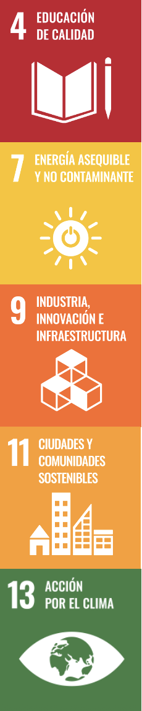

¿Por qué esta situación de aprendizaje?
La Situación de Aprendizaje "Descarbonizate" se diseña para que el alumnado comprenda, desde una perspectiva científica, social y territorial, el proceso de descarbonización y su relevancia en Asturias. Su desarrollo se justifica por la necesidad de formar ciudadanos capaces de interpretar críticamente los desafíos energéticos actuales, comprender los fundamentos físico‑químicos que los sustentan y comunicar ciencia de manera rigurosa y accesible.
Asturias, históricamente vinculada al carbón y a la industria pesada, se encuentra inmersa en un proceso de transición energética que afecta a su economía, su paisaje y su identidad. Comprender este cambio exige integrar conocimientos científicos con una lectura socioeconómica del territorio. Esta situación de aprendizaje permite al alumnado conectar la ciencia con su entorno inmediato, desarrollar pensamiento crítico y adquirir competencias comunicativas mediante la elaboración de una infografía científica y un monólogo divulgativo.
El impacto esperado es doble.
- Por un lado, académico: el alumnado aprenderá a buscar información fiable, interpretar datos, explicar fenómenos científicos y comunicar con claridad, cumpliendo los criterios de evaluación del currículo.
- Por otro lado, cívico y social: se espera el alumnado desarrolle una conciencia informada sobre la transición energética, comprenda sus implicaciones para Asturias y se posicionen como ciudadanos capaces de participar en debates contemporáneos sobre sostenibilidad, energía y futuro laboral.
Vinculación con los Objetivos de Desarrollo Sostenible
Esta situación de aprendizaje se alinea de forma directa con los siguientes ODS:

Se promueve una educación científica crítica, contextualizada y orientada a la ciudadanía activa
ODS 7 — Energía asequible y no contaminante
El alumnado analiza el proceso de transición energética comprendiendo los fundamentos científicos y las implicaciones territoriales.
ODS 9 — Industria, innovación e infraestructura
La transición energética asturiana implica reconversión industrial, innovación tecnológica y nuevos modelos productivos que el alumnado estudia y comunica.
ODS 11 — Ciudades y comunidades sostenibles
La descarbonización afecta a la movilidad, la calidad del aire y la planificación territorial, aspectos que se integran en la infografía y el monólogo.
ODS 13 — Acción por el clima
La situación de aprendizaje aborda directamente la reducción de emisiones, el cambio climático y la urgencia de actuar desde el conocimiento científico.
Vinculación con los retos del S. XXI
Los siguientes retos son los que se trabajan de manera más directa en esta propuesta educativa:
- Pensamiento crítico y cultura digital. El alumnado analiza información científica, contrasta fuentes y utiliza herramientas digitales para investigar y comunicar, desarrollando criterio propio ante la cultura digital.
- Medio ambiente. La situación de aprendizaje gira en torno a la transición energética y la descarbonización, fomentando una actitud responsable y una comprensión profunda de los desafíos ambientales actuales.
- Consumo responsable. Se reflexiona sobre el uso de recursos, los modelos energéticos y el impacto de nuestras decisiones de consumo en la sostenibilidad.
- Aprender a lo largo de la vida. El proyecto impulsa habilidades transferibles como la gestión de información, la comunicación científica y el uso autónomo de herramientas digitales.
- Cooperar y convivir. El trabajo cooperativo favorece la convivencia, la escucha activa y la construcción conjunta de conocimiento.